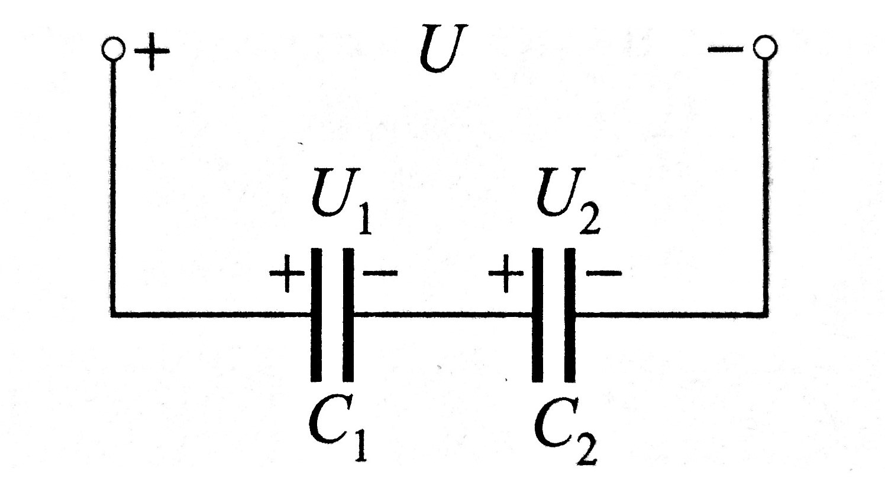

Priključimo li međusobno izolirane pločaste elektrode na izvor,
na njima će se pod utjecajem napona izvora razdvojiti jednake količine naboja suprotnog predznaka,
koji će u izolatoru među pločama stvoriti električno polje.
Odspojimo li potom elektrode izvora,
razdvojeni naboj ostat će i dalje na pločama vezani međusobno električnom silom,
a odvojeni dielektrikom u kojem stvaraju električno polje.
Na taj način, u ovom sustavu vodljivih elektroda
razdvojenih izolatorom, može se pohraniti električni naboj.
Količina pohranjenoog naboja Q pritom je razmjerna naponu U između elektroda.
\[Q \sim U \]
To znači da je za određeni sustav elektroda (i vrstu izolatora)
stalan omjer između pohranjenog naboja Q i napona U među elektrodama.
Taj omjer naziva se električni kapacitet sustava. Oznaka kapaciteta
je C, a jedinica je farad (F)
\[C = {Q \over U} \qquad [C]={As \over V} = F\]
Sustav vodljivih tijela ima kapacitet od 1 F,
ako uz napon od 1 V može pohraniti naboj od 1 As.
U stvarnosti su kapaciteti mnogistruko manji od 1 F,
do reda veličine nF (10-9F) i pF (10-12F).
Kapacitet pokazuje sposobnost tijela da se po utjecajem napona pohranjuje naboj.
Između bilo koja dva, međusobno izolirana, vodljiva tijela postoji neki kapacitet.
Kapacitet u krugu izmjenične struje
Dovede li se na kondenzator kapaciteta C izmjenični napon,
zbog stalne promjene polariteta napona, kondenzator se naizmjenično nabija i izbija.
Kako naboji pritom struje naizmjenično na ploče kondenzatora i s njih,
kroz kapacitet kao da teče izmjenična struja.
Kapacitivni otpor
Uz sinusoidni napon, u krugu s kapacitetom C i struja je sinusoidnog
oblika i jednake frekvencije.
Amplituda (vršna vrijednost) struje Im pritom je
razmjerna amplitudi napona Um, kružnoj frekvenciji ω
i kapacitetu kondenzatora C, tako da je
\[I_m = ω \cdot C \cdot U\]
Omjer amplituda napona i struje ovdje određuje otpor koji kapacitet
predstavlja izmjeničnoj struji. Taj se otpor naziva kapacitivni otpor
i označava s XC.
\[{U_m \over I_m} = {U \over I} = {1 \over ω \cdot C} = X_C\]
Kapacitivna jalova snaga
Umnožak struje i napona na kapacitetu daje sinusoidu
trenutačne snage čija je srednja vrijednost, tj.
radna snaga jednaka nuli (slika).
Umnožak efektivnih vrijednosti struje i napona, tj.
snaga na kapacitetu stoga se (za razliku od radne
snage) naziva jalova snaga i označava s \(Q_C\).
$$ Q_C = U \cdot I = \frac{U^2}{X_C} = I^2 \cdot X_C $$
Serijski spoj
Spoj dvaju kondenzatora u kojem naboj iz izvora može doći samo na vanjske ploče spoja, dok su unutarnje ploče od izvora odvojene izolatorom.
Kako se međutim unutarnje ploče nalaze u polju nabijenih vanjskih ploča, na njima se influencijom razdvaja naboj i to upravo tolikog iznosa koliki je naboj vanjskih ploča.
Rezultat toga je da su oba kondenzatora nabijena i to jednakim količinama naboja.
Međusobno jednaki naboji Q1 i Q2 ovako spojenih kondenzatora jednaki su ujedno i ukupnom naboju Q koji je izvor razdvojio na cijelom spoju, tj.
\[{Q_1}={Q_2}={Q}\]
Ovakav spoj gdje je ukupni naboj spoja jednak naboju svakog pojedinog kondenzatora naziva se serijski spoj kondenzatora.
Prema Kirchhoffovom zakonu za napone, u serijskom spoju ukupni napon na spoju Uuk jednak je zbroju napona pojedinih kondenzatora, U1 i U2
\[{U_{uk}}={U_1}+{U_2}\]
Uvrste li se ovi naponi izraženi pomoću naboja i kapaciteta (gdje je Cuk ukupni kapacitet spoja)
\[U_{uk} = {Q \over C_{uk}} \qquad U_1 = {Q \over C_1} \qquad U_2 = {Q \over C_2}\]
dobiva se sljedeća jednadžba
\[{Q \over C_{uk}} = {Q \over C_1} + {Q \over C_2} \]
koja (djeljenjem s Q) daje izraz za ukupni kapacitet Cuk serijskog soja dvaju kondenzatora
\[{1 \over C_{uk}} = {1 \over C_1} + {1 \over C_2} \quad tj. \quad C_{uk} = {{C_1 \cdot C_2} \over {C_1 + C_2}} \]
Općenito za serijski spoj n kondenzatora vrijedi
\[{1 \over C_{uk}} = {1 \over C_1} + {1 \over C_2} + ... + {1 \over C_n} \]
U serijskom spoju, recipročna vrijednost ukupnog kapaciteta jednaka je zbroju recipročnih vrijednosti pojedinih kapaciteta.
Ukupni kapacitet serijskog spoja je manji od najmanjeg pojedinačnog kapaciteta.
Na serijski spojenim kondenzatorima napon se dijeli obrnuto razmjerno njihovim kapacitetima
$${{U_1 \over U_2} = {C_2 \over C_1}}$$
Za serijski spoj kondenzatora kaže se da je kapacitivno djelilo napona.
content_pastePrimjer 1
Ako su kapaciteti kondenzatora C1 = 3 pF i C2 = 6 pF, a ukupni napon U = 24 V,
odredite ukupni kapacitet Cuk i ukupni naboj Quk spoja,
te naboje (Q1 i Q2) i napone (U1 i U2) na kondenzatorima.
$${C_{uk} = {{C_1 \cdot C_2} \over {C_1 + C_2}} = {{3 \cdot 6} \over {3 + 6}} \ pF = {18 \over 9} \ pF = 2 \ pF}$$
$${Q_{uk} = {C_{uk} \cdot U} = {{2 \cdot 10^{-12} F } \cdot {24 \ V}} = {48 \cdot 10^{-12} As } = {48 \ pAs}}$$
$${Q_1 = Q_2 = Q_{uk} = 48 \ pAs}$$
$${U_1 = {Q_1 \over C_1} = {48 \ pAs \over 3 \ pF} = {16 \ V}}$$
$${U_2 = {Q_2 \over C_2} = {48 \ pAs \over 6 \ pF} = {8 \ V}}$$

Paralelni spoj
Kondenzatori na slici spojeni su tako da imaju isti napon, koji je jednak ukupnom naponu spoja
\[{U_1}={U_2}={U}\]
Spoj gdje su kondenzatori priključeni na isti napon nazivamo paralelni spoj kondenzatora.
Naboj je ovdje razdijeljen na pojedine kondenzatore (pozitivni na gornjim, a negativni na donjim pločama),
tako da je ukupni naboj spoja jednak zbroju naboja pojedinih kondenzatora, tj.
\[Q={Q_1}+{Q_2}\]
Dijeljenjem ove jednadžbe naponom U dobivamo
\[{Q_{uk} \over U}={Q_1 \over U}+{Q_2 \over U}\]
Omjer ukupnog naboja Quk i ukupnog napona U spoja određuje ukupni kapacitet spoja Cuk, pa uz
\[C_{uk} = {Q_{uk} \over U} \qquad C_1 = {C_1 \over U} \qquad C_2 = {C_2 \over U}\]
dobivamo izraz za ukupni kapacitet ovoga spoja
\[{C_{uk}}={C_1}+{C_2}\]
Općenito, za paralelni spoj n kondenzatora vrijedi
\[{C_{uk}}={C_1}+{C_2}+...+C_n\]
Ukupni kapacitet paralelnog spoja kondenzatora jednak je zbroju pojedinačnih kapaciteta.
Na paralelno spojenim kondenzatorima naboj se dijeli razmjerno njihovim kapacitetima
$${{Q_1 \over Q_2} = {C_1 \over C_2}}$$
content_pastePrimjer 2
Koliki najveći, a koliki najmanji kapacitet se može postići spajanjem n= 10 jednakih kondenzatora
pojedinačnog kapaciteta C= 10 pF
Paralelnim spajanjem n kondenzatora kapaciteta C postiže se n puta veći ukupni kapacitet:
$$ C_{max} = {n \cdot C} = 100 \ pF $$
Serijskim spajanjem n kondenzatora kapaciteta C postiže se n puta manji ukupni kapacitet:
$$ C_{min} = {C \over n} = 1 \ pF $$
content_pastePrimjer 3
U paralelnom spoju kondenzatora uz napon U= 100 V ukupni naboj je Quk= 3,2 mAs.
Ako je kapacitet kondenzatora C1= 10 µF odredite kapacitet kondenzatora C2,
te naboje na pojedinim kondenzatorima (C1 i C2).
$$ {C_{uk} = {Q_{uk} \over U} = {{3,2 \cdot 10^{-3} \ As} \over {100 \ V}} = {32 \cdot 10^{-6} \ F } = {32 \ µF}} $$
\[C_{uk} = {C_1 + C_2} \qquad C_2 = {C_{uk} - C_1} = {32 \ µF - 10 \ µF} = {22 \ µF} \]
\[Q_1 = {C_1 \cdot U} = {(10 \cdot 10^{-6} \ F) \cdot 100 \ V} = 10^{-3} \ As = 1 \ mAs \]
\[Q_2 = {C_2 \cdot U} = {(22 \cdot 10^{-6} \ F) \cdot 100 \ V} = 2,2 \cdot 10^{-3} \ As = 2,2 \ mAs \]